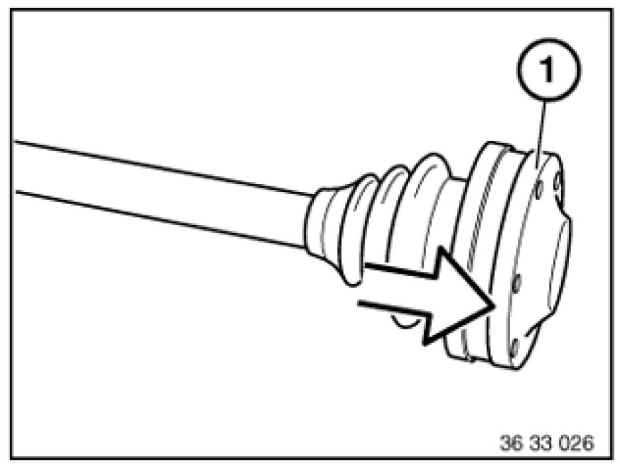
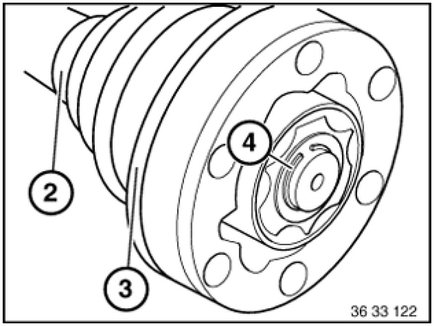
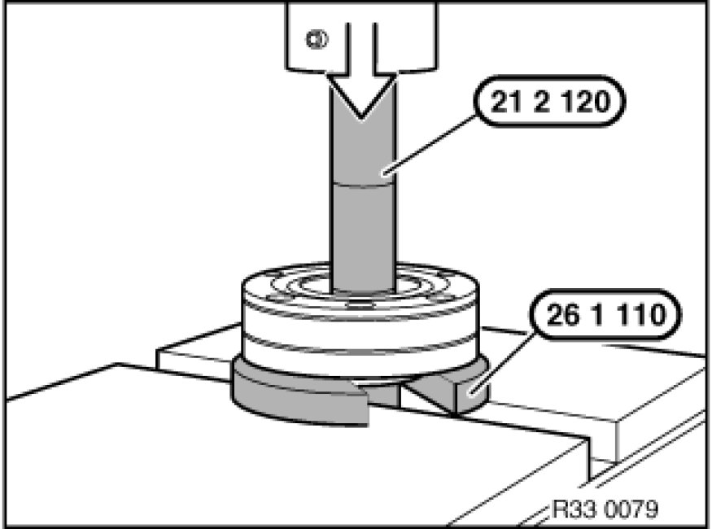
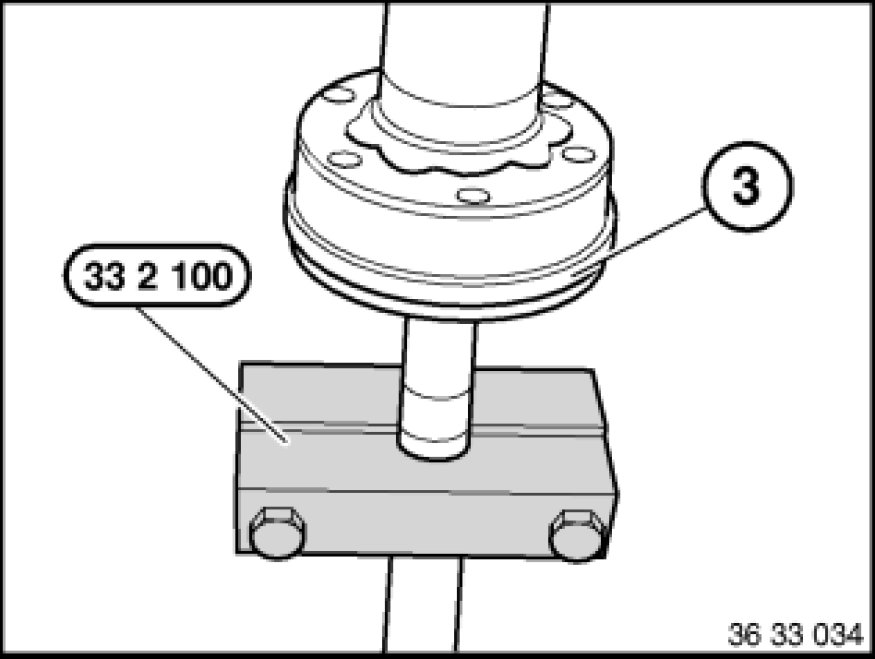
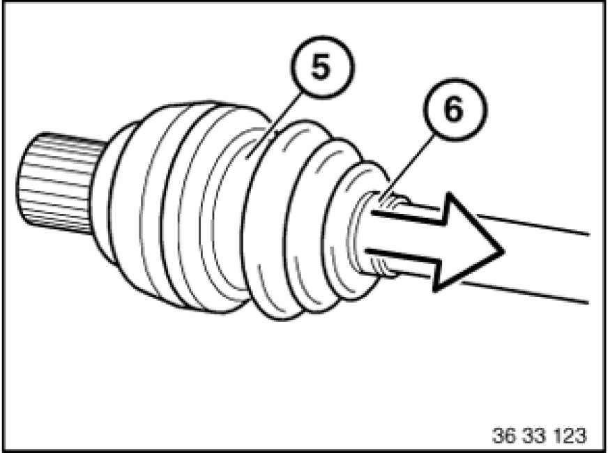
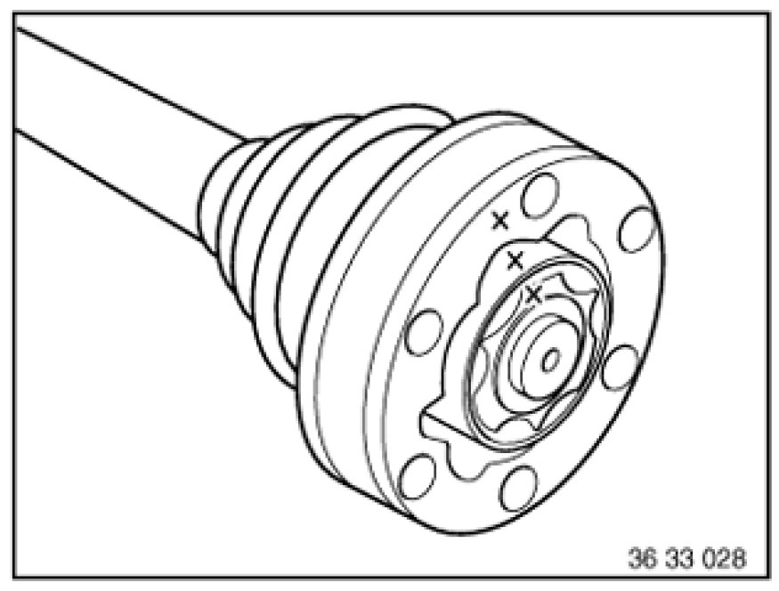

Replacing Gaiter on Left Output Shaft
33 21 035 - Replacing gaiter on left output shaft

Special tools required:
- 21 2 120 21 2 120 Clutch Centering Tool
- 26 1 110 26 1 110 Removal Disk
- 33 2 100 33 2 100 Clamping Fixture

Necessary preliminary tasks:
- Remove output shaft

Clean output shaft.
Press off sealing cap (1).
Installation:
Press on sealing cap with a thrust ring
Coat sealing faces of sealing cap with sealing compound (refer to BMW Parts Service).

Unfasten hose clip (2).
Press cap (3) off together with gaiter.
Remove circlip (4).
Installation:
Turn new gaiter with cap (3) so that fastener of large hose clamp is between two bores of constant-velocity joint.

Special tool 26 1 110 26 1 110 Removal Disk must be used in accordance with diameter of output shaft. Bearing inner race must rest on rib of special tool.
Hollow shaft only: Also use special tool 21 2 120 21 2 120 Clutch Centering Tool.
Press splined shaft out of constant-velocity joint.
Clean constant-velocity joint carefully and remove all traces of old grease.
Check constant-velocity joint for damage, replace if necessary.
Detach gaiter from splined shaft.

Installation:
Pull gaiter onto cap (3).
Coat sealing surface of cap (3) with sealing compound (refer to BMW Parts Service) and press with a thrust ring onto constant-velocity joint.
Fill constant-velocity joint with high-temperature grease (refer to BMW Parts Service).
Install new circlip.
Press constant-velocity joint and cap (3) over inner bearing race on splined shaft.
Mount special tool 33 2 100 33 2 100 Clamping Fixture with corresponding insert.
Push new gaiter onto splined shaft.

Release hose clamps (5, 6).
Detach gaiter from splined shaft.
Clean joint carefully and remove all traces of old grease.
Installation:
Pull new gaiter on.
Thoroughly clean joint while assembled and remove old grease completely.

Disassembling/assembling constant-velocity joint:
Note:
Mark positions of ball hub, ball cage and joint with respect to each other with electric inscriber.
Ensure all parts are clean prior to assembly.